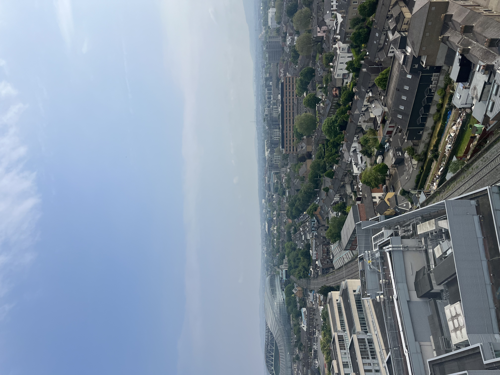
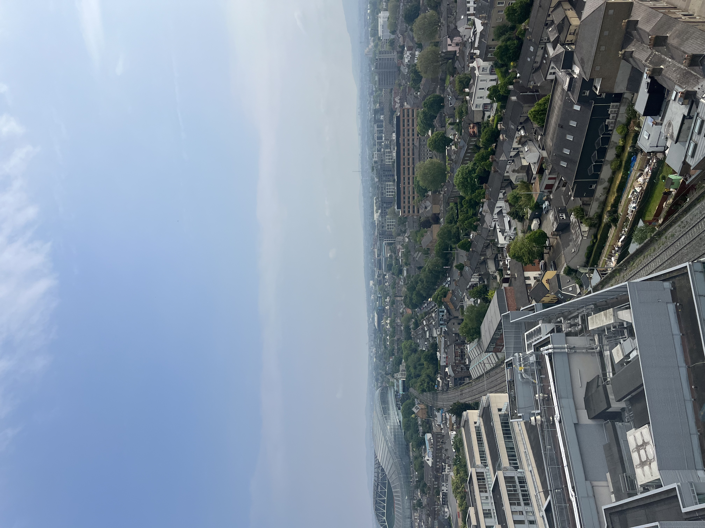
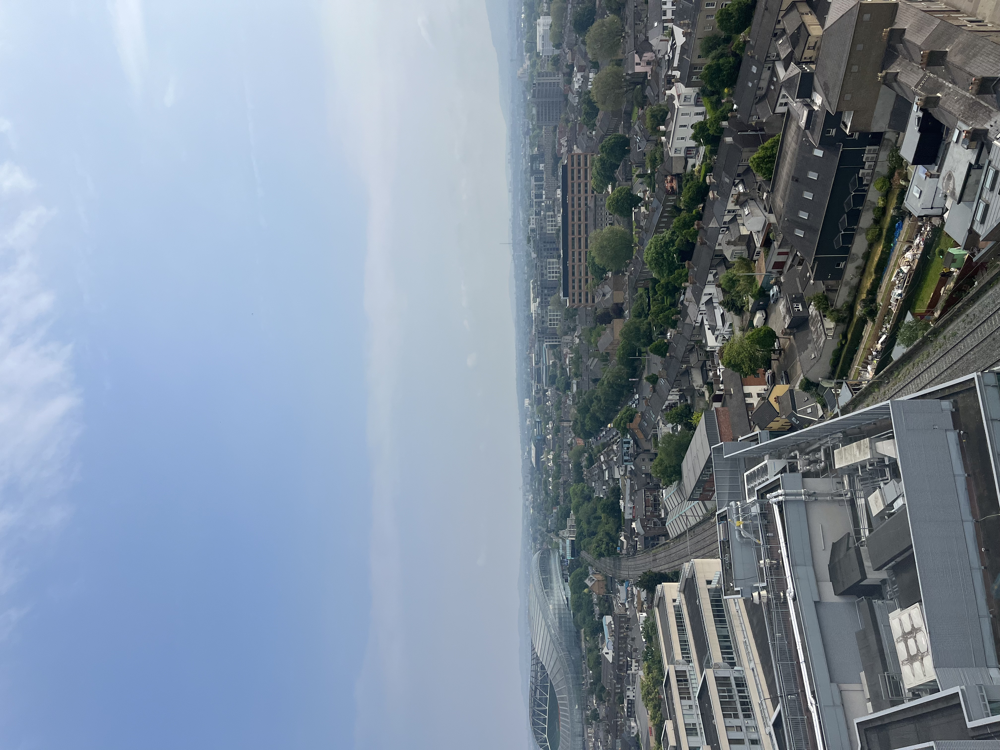

The day began with me waking up early to finish packing for my trip. Once I finished packing it was time to drive two hours to Philly for my direct flight to Dublin. The flight was about 6 hours long and I arrived around 6:00 AM. My pickup time was around 9:00 AM so I had to hang around the airport for a little. Once we got everyone together at the airport we all piled into a van and went to lunch. I ordered a traditional Irish Burger with fries. It was a very good meal especially since I was so hungry from traveling. After the meal we went to our apartments where we will be staying for the next 2 and a half weeks. There, I met my roommate Ben, who seemed very nice. I can't wait for all the adventures I'm going to have!
On my first whole day in Dublin we had orientation at Griffith College where we will be attending class for the next few weeks. After orientation we were given time to go explore and eat lucnh. I ate lunch at the Fumbally where I had a steak sandwich. It was bussin. After that we met up and did a bus tour of Dublin. It was very informative and I learned a lot. My favorite stop was when we saw the rebel burial grounds . After the tour we were done for the day. We got back to the apartments and I took a nap then got dinner with my roommmate Ben. Then I went to bed early to get up for class the next day.
Sam's Second and Third Day
Our second day was also our first day of class. In class we set up our GitHub repository and copied the example website. We then started to tailor the example website to our own unique style. We will continue to work at this as we learn more and more skills to style our website. After class we were given the rest of the afternoon to do as we wanted. I had fun going on a run and exploring some of Dublin. After my run I went to dinner with some classmates at Wowburger. It was delicious! After dinner I went home and relaxed till I went to bed.
On the third day we learned about implenting a couple things into our website such as, media queries for accessibility and responsiveness, grids for photo galleries, and flex for navigation. After class I went back to the hotel and ate lunch and relaxed while I waited till 3 for our guest lecturers that spoke about gamification and a library website. Once that concluded, some classmates and I went to dinner at a place called the Ramen Bar. As we were walking there I looked at Saint Patrick's Catherdral. Once we got there, I ordered tonkotsu ramen and I thought it was very good. After that I went back to the room and fell asleep because I was very fatigued.
Sam's Fourth Day
Today we visited the a EPIC The Irish Emigration Museum. I thought the Museum was very interesting. It touched on topics throughout Ireland's history such as immigration, sports history, invention, and heritage. I enjoyed going around and stamping my paper passport at each room. I learned a great many things. One thing I thought was really interesting was Gaelic Football. In Gaelic Football players advance the ball by carrying, kicking, bouncing, hand-passing, and soloing. The sport has a lot of things that are similar to others sports, but they are all incorporated together into one single sport which is very interesting to me. I also liked the gift shop where the had coasters and key chains with the last name of Irish families. I found a keychain that had the last name Conroy on it which was my grandmothers last name before she married my grandfather.
After we finished with the museum my roommate and I walked around Dublin for a little. We visited various shops such as a lego shop and a gift shop. At the gift shop there was a doll that was kind of scary. I'm glad we got the chance to walk back from the museum because I got to take a picture on one of the bridges we were walking on. The picture I took was primarily of the Liffey, but it also captures some of Dublin in the background.
Sam's Fifth Day
Today we took our first day trip. Our first stop was to Glendalough. I think my overall experience at Glendalough was enhanced becuase of the amazing weather. I liked Glendalough because it had a lot of history and it was very beautiful. Glendalough has a lot of people buried there so it was interesting to read a lot of the tombstones. Some of the tombstones had stories of the people that were buried there which I thought was very cool. I especially enjoyed the view from the second lake that we visted. The valley that we were in was such a treat that I was not expecting to see while on this trip. There were also a lot of deer and dogs hanging out around the lake which I enjoyed.
Later that day we drove to Kilkenny. Since we had some free time before our tour of Kilkenny castle, I decided to run up to Saint Mary's Cathedral. I love looking at cathedrals because I am very interested in the architecture. I'm glad that I made the walk to visit the Cathedral because it was very pretty on the inside and on the outside. After that we toured Kilkenny castle which had a lot of historic furniture and artwork in it. Once, I had finished walking through the castle I went outside and was astonished at the rolling parkland which spands for approximately 50 acres.
Today we visited the National Disability Authority of Ireland. The first thing I noticed about the building was the long ramp down to the front door, which is a key accessible feature for people that utilize wheelchairs. We were given a presentation in a conferenceroom with a long table in it. The presenter talked about how he mainly monitors websites on a large scale to see if they are providing users with all the accessiblity tools that may be needed. They then give evidence based advice to website administrators based on what needs to be fixed. He also talked about their devotion to promoting Universal Design. Universal Design is "the design and composition of an environment so that it can be accessed, understood and used to the greatest extent possible by all people regardless of their age, size, ability or disability". He also talked a lot about the differnce between how the United States approaches requiring accessibility and how European Union apporaches it. The main difference is the enforcement. In the US, The Americans with Disabilities Act compliance is enforced reactively, often through lawsuits and subsequent court decisions. The EU tends to be more proactive, requiring member states to monitor and report on compliance, potentially reducing the need for litigation. After the visit I walked around Saint Stephen's green with my roommate Ben.
My tour to Microsoft
Today we were greeted with unexpected news at class today! We were actually going to go visit Microsoft Headquarters today instead of going to the Small museum. After class I got lunch with my roommate Ben at the Fumbally. The Fumbally is kind of becoming a reoccurring spot among us students. At lunch I ordered a pork belly sandwich and a donut with cherry filling. It was very good. After lunch we went back to our room and relaxed for a little before we went to the tour. My roommate and I got a taxi to get to the headquarters and we were the only people who were late. #oopsies.
The Microsoft building was very modern and had a lot of amenities for the workers. Some of the things that I thought were cool were the sleeping pods, the multiple in-building restaurants, and the drink fountains. I was blown away at the capacity. I think that the mentioned that they could have a couple thousand people on site. I thought the view from the top of the building was very beautfiul as well. I like that they had a yoga room to promote activeness among their workers. Viktor, our tour guide talked a lot about AI and its importance of learning and being proficient with using it. Overall, I thought the experience was helpful to see what I would be working towards a possible internship if I was really devoted and hard working with my time in college.
Doclands Tour
Today we did a "doclands" tour which was essentially a tour of the bay area of Dublin. Our tour guide Darren talked a lot about the evolution of Ireland and how it has gone from an "underdeveloped" country to a "developed" one. It was interesting to learn about how hard it was to go to college in Ireland back then because there weren't a lot of colleges. A big problem they had was that the people that went to these colleges would go to other countries for better jobs because Ireland didn't have a lot of jobs for these graduated college students. Darren referred to this phenomena as academic drain when educated people leave the country for better jobs. He talked about how they tried to solve this by educating a lot of the youth so that Ireland could be more technologically advanced. He also talked about the tax incentives and why Ireland is such a great spot for tech companies to set up big hubs/headquarters at. He also addressed the housing issue and how apartments jacked up prices because people from out of the country are willing to pay more. Since it is so expensive now, local people cannot afford the rent prices. Overall, I learned a lot and enjoyed walking around the area.
My tour to Google
Today we toured the Google European Headquarters. They provided us name tags which will serve as a cool memory to look back on. I thought it was very interesting because unlike Microsoft, Google had multiple buildings for us to look at. The first building we looked at is called "GoogleDocks" and is 14 stories tall with a beautiful view of the Dublin area. I also liked that they had a Google themed area outside that included tables and swings for workers to relax at when the weather is nice. The building had stations where people could get a drink or snack. I got myself a pack of gum at one of these stations. The tour guide mentioned that one of their buildings used to be a flower mill in the past which I thought was very interesting. I thought this tour was informative and it showcased what working at Google may look like.

Check out my Galway and Cliffs of Moher pages for my blog!
Trinity Tour
Today we had a tour at Trinity College. Thankfully, the weather was very nice as we toured the campus. I thought the campus was very beautiful. I enjoyed visiting the Cricket pitch because I had never seen one before. I learned a lot of interesting things about the college. One thing I learned was that they did not admit women till 1969. It was created by royal charter in 1592. The major disciplines are in the arts and humanities, and in business, law, engineering, science, and health sciences.


 



{kind=link}